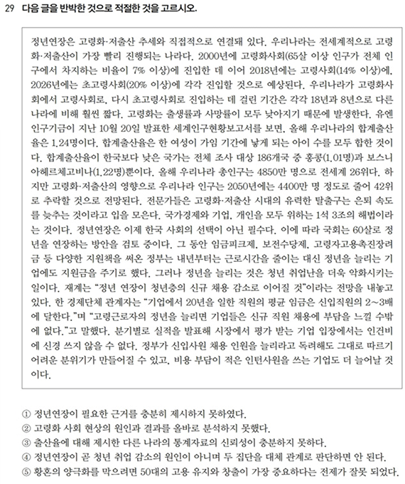
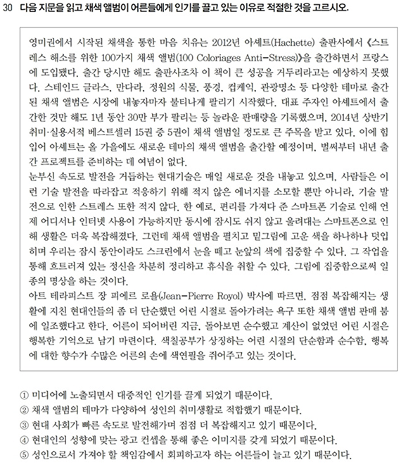

[삼성] 온라인 모의테스트


1. 문제 유형: 지문 내용 일치/불일치 판단형
이 문제는 보기 중 지문의 내용을 바르게 요약하거나 잘못 해석한 문장을 고르는 유형입니다. 보기들 각각이 지문 전체 또는 특정 부분을 요약하거나 재진술한 것으로, 세부 정보의 정확성, 논리적 관계의 이해, 자료 해석의 정합성 등을 요구합니다.
특징:
- 주어진 보기들은 지문에 있는 문장 또는 문단을 바탕으로 재구성된 문장입니다.
- 보기는 부분적인 정보 왜곡, 단정적 표현, 인과 관계의 전도 또는 과도한 일반화 등을 포함하고 있어 이를 간파할 수 있어야 합니다.
- 전통적인 "사실 여부" 판단을 넘어서, 지문이 담고 있는 의도, 통계 자료의 해석, 논리 흐름의 명확한 이해가 중요합니다.
2. 지문 특징 분석
지문은 **"청년인구 감소 및 청년인구정책"**과 관련된 통계적 사실과 정부 정책, 기업 반응 등을 다룬 비문학 정보 지문입니다. 주요 특징은 다음과 같습니다:
- 인과 관계 강조: 저출산-고령화-인구감소-청년인구 감소의 흐름이 강하게 연결됨.
- 통계자료 활용: 합계출산율, 총인구, 국제 비교 수치 등이 제시됨.
- 정부 정책 및 기업 반응 서술: 청년을 늘리기 위한 정책 수단, 채용시장 반응 등을 객관적으로 기술.
- 사회적 우려와 전망 제시: 출산율 감소의 장기적 영향과 이에 대한 대응 필요성을 서술.
3. 정답 선택 기준
이 문항의 정답을 찾기 위해선 아래와 같은 절차를 따릅니다:
- 지문에서 제시된 정보의 사실 여부 파악
- 보기가 왜곡, 과장, 생략, 단정하고 있는지 분석
- 각 보기가 지문의 전체 맥락과 맞는지 대조
- 가장 명확히 지문 내용을 왜곡한 보기를 정답으로 선택
지문 요약 및 구조 분석
지문은 청년 인구 감소가 고령화·저출산과 밀접한 관련이 있음을 강조하며, 우리나라가 전 세계적으로 고령화와 저출산이 가장 빠르게 진행되고 있는 나라임을 설명합니다. 다음과 같은 내용이 주를 이룹니다:
1. 인구 구조 변화
- 2000년 고령화사회(65세 이상 인구 7%) → 2018년 고령사회(14%) → 2026년 초고령사회(20%)
- 초고령사회 진입 속도: 한국 8년 / 프랑스 18년 → 매우 빠름
2. 합계출산율 및 국제 비교
- 우리나라 합계출산율 0.72명(2024년), 세계 최하위
- 조사 대상 186개국 중 홍콩(0.1명), 보스니아(1.2명) 다음으로 낮음
- 총인구 약 4850만 명 → 세계 26위
3. 인구 감소와 경제적 영향
- 인구 감소 → 2050년엔 4000만 명 이하로 감소 예측
- 노동력 감소 → 경제 성장 저해, 1년 33조의 손실 발생 추정
- 정부와 기업은 청년 인구 감소를 막기 위해 대책 검토 중
4. 정부 및 기업의 대응
- 정부: 청년 고용 장려, 병역 기간 단축, 임금 지원, 고령자 고용 지원
- 문제점: 청년 고용 확대책이 실제로는 청년 취업난을 악화시킬 수 있음
- 기업: 고령 근로자에게 높은 임금을 지불해야 하므로 신규 채용 기피
보기별 분석
1. "청년인정이 필요하단 근거를 충분히 제시하지 못하였다." → ❌
오답 이유: 지문 전체가 청년 감소에 대한 수치, 고령화 사회의 구조적 변화, 국가적 손실 등 수많은 통계적 근거와 구조적 설명을 통해 필요성을 강조하고 있음.
‘충분하지 않다’는 주장은 지문을 무시한 평가임.
유사문제 1
다음 글을 반박한 것으로 적절한 것을 고르시오.
<지문 요약>
고령화와 저출산이 동시에 빠르게 진행되고 있는 한국 사회는 청년 인구가 급감하고 있으며, 이에 따른 노동력 부족과 경제 성장 저해가 심각한 문제로 부각되고 있다. 정부는 청년 고용을 늘리기 위해 각종 정책을 도입하고 있으나, 실제로는 청년 취업 환경을 악화시키고 있다는 지적도 존재한다.
<보기>
1. 정부는 청년 고용을 장려하고 있기 때문에 청년 실업률은 지속적으로 감소하고 있다.
2. 저출산과 고령화 문제는 한국보다는 일본에서 훨씬 빠르게 나타난 현상이다.
3. 청년 인구 감소는 노동력 부족 문제를 일으키지 않기 때문에 경제에 큰 영향을 미치지 않는다.
4. 기업의 신규 채용 부담은 고령자 인건비 때문이 아니라 경기 불황이 주요 원인이다.
5. 정부는 청년 정책을 전면 폐지하고 외국인 노동자를 대체 인력으로 삼는 방안을 중심으로 추진하고 있다.
유사문제 2
다음 글의 내용을 가장 적절하게 요약한 것을 고르시오.
<지문 요약>
우리나라는 초고령사회로의 진입이 매우 빠르게 진행 중이며, 이로 인해 노동력과 경제적 부담이 커지고 있다. 청년 인구를 늘리기 위한 다양한 정책이 추진되고 있으나, 기업은 인건비 등의 이유로 실질적인 채용 확대에 소극적이다. 이런 환경에서는 단순한 청년수 증가보다 실효성 있는 고용정책이 필요하다.
<보기>
1. 고령화가 빠르게 진행되지만, 정부와 기업의 노력 덕분에 청년 고용 시장은 안정적이다.
2. 청년 인구를 늘리는 것만으로는 청년 실업 문제를 해결할 수 없으며, 고용 구조 개선이 필요하다.
3. 출산율 감소는 국제적으로 보편적인 현상이므로 특별한 정책은 필요하지 않다.
4. 정부는 청년 인구 감소 문제를 인식하지 못하고 고령층에만 집중된 정책을 펴고 있다.
풀이및정답 1
<지문 요약>
고령화와 저출산이 동시에 빠르게 진행되고 있는 한국 사회는 청년 인구가 급감하고 있으며, 이에 따른 노동력 부족과 경제 성장 저해가 심각한 문제로 부각되고 있다. 정부는 청년 고용을 늘리기 위해 각종 정책을 도입하고 있으나, 실제로는 청년 취업 환경을 악화시키고 있다는 지적도 존재한다.
풀이및정답 2
다음 글의 내용을 가장 적절하게 요약한 것을 고르시오.
<지문 요약>
우리나라는 초고령사회로의 진입이 매우 빠르게 진행 중이며, 이로 인해 노동력과 경제적 부담이 커지고 있다. 청년 인구를 늘리기 위한 다양한 정책이 추진되고 있으나, 기업은 인건비 등의 이유로 실질적인 채용 확대에 소극적이다. 이런 환경에서는 단순한 청년수 증가보다 실효성 있는 고용정책이 필요하다.